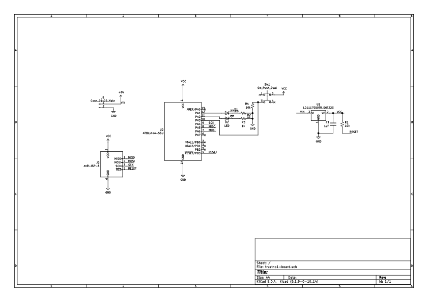
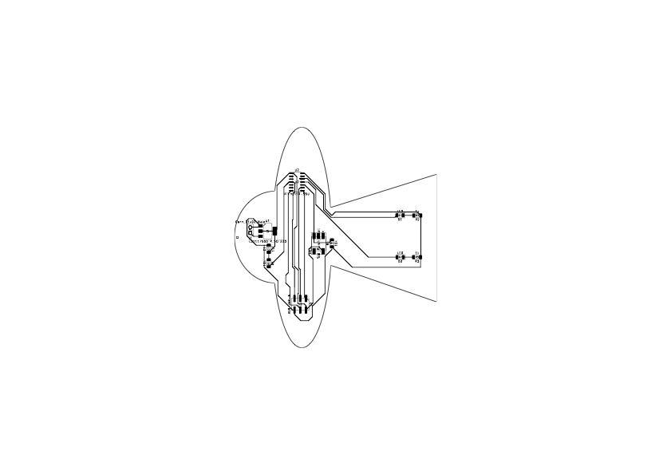

designing pcbs
making!
circuit design
Building on last week's initial foray into PCBs, we designed a circuit with an input and output. I like the satisfying clicks of smol buttons on boards, so I decided to use a button as input and two LEDs for output (2, because if one ended up not working for some reason, maybe the other would :). Beginning from reference board, I made the schematic in Kicad:

The headers for the programmer and power headers largely didn't change, and the 5V regulator was swapped to match the ones we have in inventory (more on that later...). The LEDs are in series with 1kΩ resistor, which is the lowest value we have; with a ~2V drop from the LED this will give us around 3mA of current which is low, but things should still light up. The button circuit is normally open and connected through a 10k pull-down resistor to ground, and gets pulled high when pressed. Navigating the Kicad interface of symbols and footprints was a bit confusing to start but I think I got the hang of it by the end.
I decided to mill the outline of the board in the shape of a UFO, with the LEDs towards the bottom of a 'beam of light'. But for whatever reason while wiring the traces, it was confusing to me when the components were spaced far away. So, I started by wiring things 'close together' and then moved things around to match fit into the desired shape. I created the UFO outline in illustrator just using a few ellipses and polygons, exported it as a dxf, and imported that into the 'edge cuts' layer of pcbnew. While routing traces, I got to a stage where things were mostly done, but I couldn't get my button input to the ATtiny pin because it was blocked by the LED traces. I ended up just changing the schematic to use different pins, which made things easy to connect. Finally, I added a via at the very top of the board so I could hang this as e.g. a tree ornament.

milling & soldering
launch 1: flopnik
I milled my first board using mostly default settings in the Bantam software, with the trace clearance increased to 0.3mm. The design is pretty big and
juuuuust fits onto the boards that we were given, so I had to pay special attention to the plan offset to make sure it didn't go off the board. I also
added a bigger sacrificial layer to accommadate. The milling process itself was fun and painless. Because I didn't have much room in the y-direction to offset the material, it was a bit hard to unload.

My first soldering job started a bit sloppy as I got used to surface mount soldering. Key points of drama: I didn't get the programmer header pins aligned straight
at first, and when I tried to rotate it, I pulled a bit of copper off the board. At other points I got blobby and used desoldering braid to undo it. Then, I tried to
program the board. I started installing packages for mac to use avrdude, but ended up finding that using the ISP programmer but through the Arduino IDE was more
straightforward- this walkthrough was helpful. I plugged everying in, and... device not found!
Nadya identified some points to look at and in particular, we found that the ground and VCC pins were shorted in the voltage regulator. After some investigation I
decided to re-mill with bigger trace clearances.
launch 2: flopnik, but tidier
At this point I felt pretty comfortable with the Othermill. I went through the same process, using a trace clearance of 1mm (upped from 0.3mm). This took about
3 times longer to mill the traces, but still only 18 minutes. When I returned to the soldering station, there was a magnifying lens + lamp to use! Soldering felt
a good bit easier with this- I'm not sure how much better it turned out, but it seemed tidier.

When programming again, I ran into the same problem. I did more multimeter testing and ended up finding the same thing as before: the ground and VCC pins
were connected on the voltage regulator. Confused, I pulled up the datasheet and found... those pins are supposed to be connected! But they are not VCC & ground, but
are both VCC! Looks like I clicked the wrong symbol when I swapped the regulators, so the pins were wrong. Sigh. I swapped to the correct pinout, and milled again.
launch 3: lift-off!
Third time's the charm! Soldering this time went significantly faster. In the moment of
truth, I uploaded my sketch, and... it worked! My code has the LEDs blink back and forth on a button
press.
Here's the microcontroller code:
reflections
I had a lot of fun with this, despite pinout problems. Having never moved very far from the breadboard,
comfortability with e.g. Kicad, milling, and surface mount soldering was something I was particularly
looking forward in this class. I think it will be tremendously helpful in future projects (make everything
smaller & more secure!). It was also an enjoyable experience, soldering was sneakily meditative.